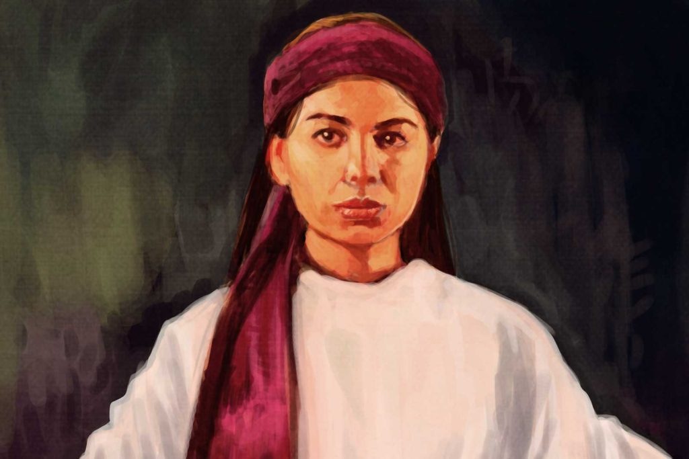
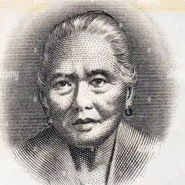

| Image | Name | Accomplishments |
|---|---|---|
|  | Gabriela Silang | She fought for the Filipino independence despite the strong forces they faced. |
|  | Melchora Aquino | Also named "Tandang Sora", she is the mother of Katipunan. She helped aid the ones who fought in the war. |
| Corazon Aquino | She was the first female Philippine president after the martial law. |